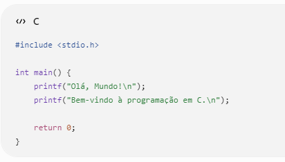
Explicação:
#include
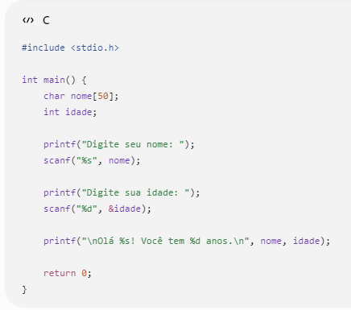
Explicação: char nome[50]; cria uma variável para armazenar o nome. %s lê uma palavra. %d lê um número inteiro. &idade informa o endereço da variável onde o valor será armazenado.
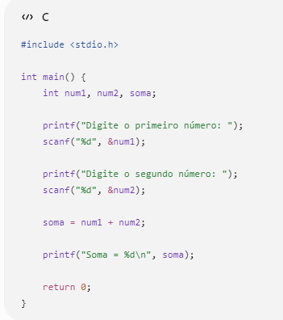
Explicação: Lê dois números inteiros. Soma os valores. Exibe o resultado.
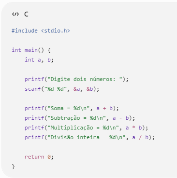
Explicação: Operadores usados: + Soma - Subtração * Multiplicação / Divisão inteira (quando ambos são inteiros)
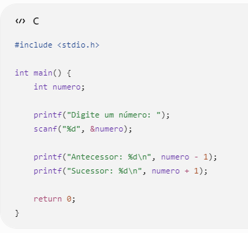
Explicação: Antecessor = número - 1 Sucessor = número + 1
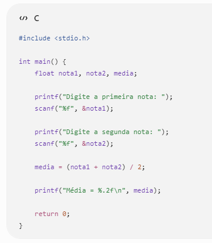
Explicação: float armazena números com casas decimais. %.2f mostra duas casas decimais.
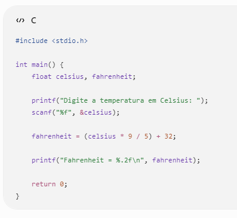
Explicação: Fórmula: F = (C × 9 / 5) + 32 Exemplo: 30°C = 86°F
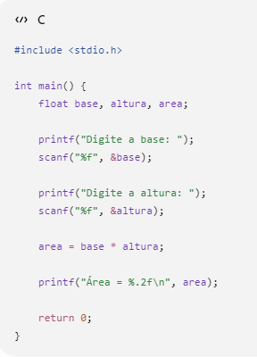
Explicação: Fórmula: Área = Base × Altura
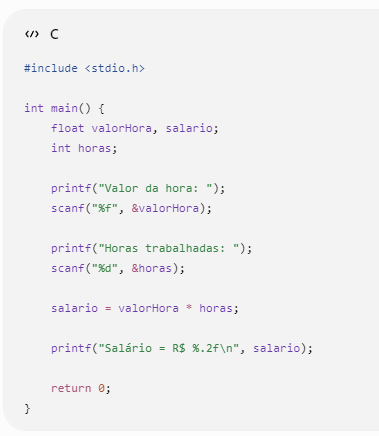
Explicação: O salário é calculado multiplicando: Salário = Valor da Hora × Horas Trabalhadas
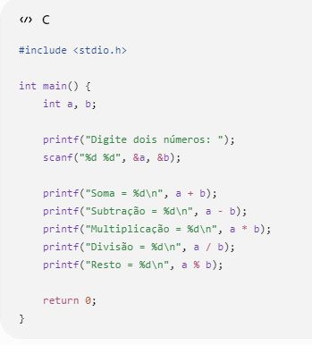
Explicação: O operador % calcula o resto da divisão. Exemplo: 10 % 3 = 1 Porque: 10 = 3 × 3 + 1
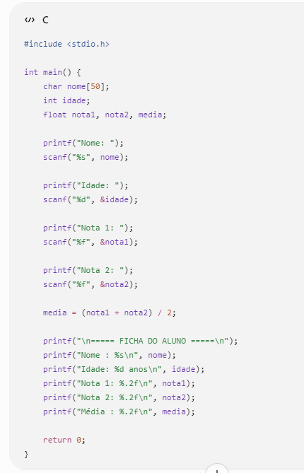
Explicação: O programa da atividade extra solicita ao usuário o nome, a idade, a primeira nota e a segunda nota do aluno. Para isso, utiliza uma variável do tipo char para armazenar o nome, uma variável do tipo int para armazenar a idade e variáveis do tipo float para armazenar as notas e a média. Os dados são digitados pelo usuário por meio da função scanf(). Após a leitura das informações, o programa calcula a média das duas notas utilizando a expressão (nota1 + nota2) / 2 e armazena o resultado na variável media. Em seguida, a função printf() é utilizada para exibir uma ficha do aluno na tela, mostrando o nome, a idade, as duas notas informadas e a média final, organizada de forma clara e formatada com duas casas decimais. Esse exercício reúne diversos conceitos básicos da linguagem C, como declaração de variáveis, entrada e saída de dados, operações aritméticas e formatação de informações, sendo uma boa prática para consolidar os conteúdos estudados.